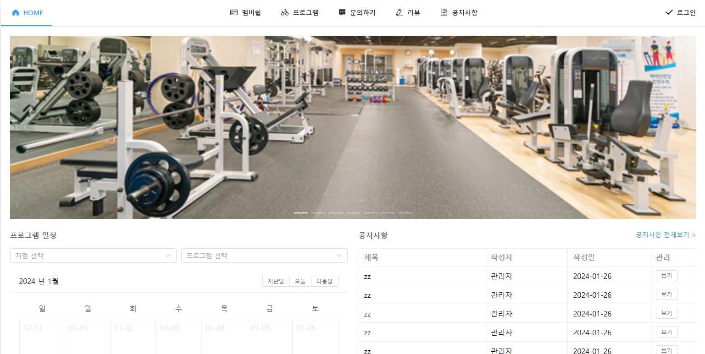
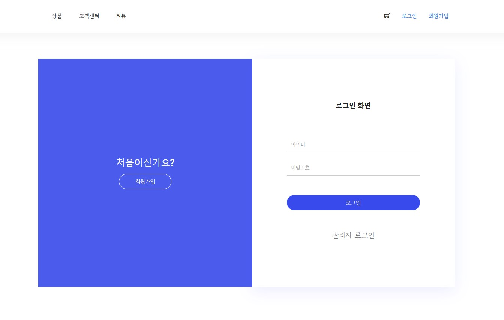
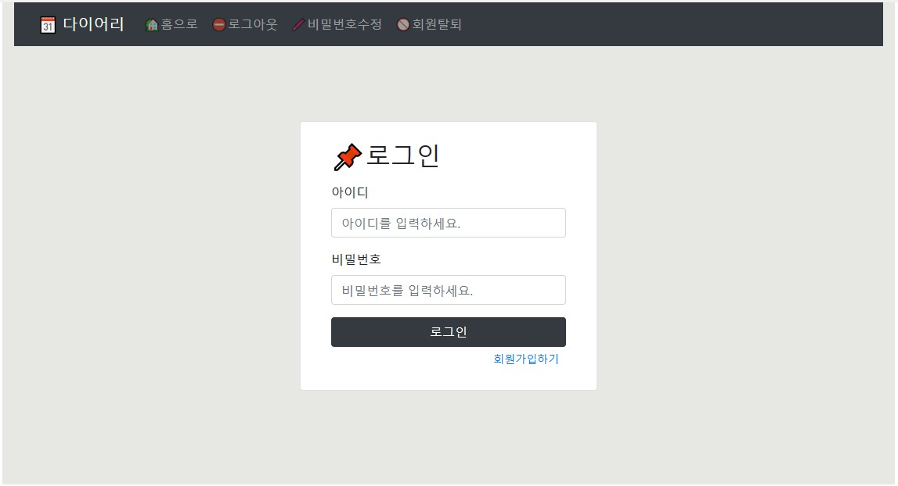
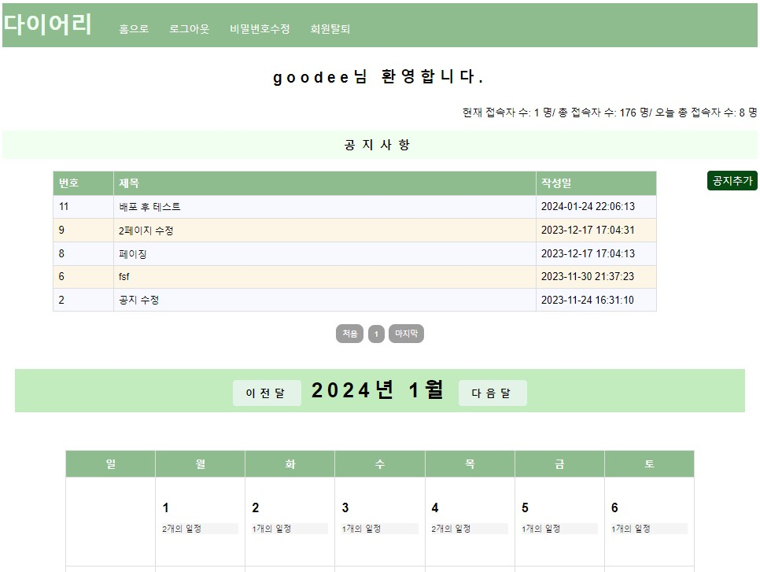

주가희
010-4719-3258
1994.10.31
wnrkgml0514@naver.com
1994.10.31
wnrkgml0514@naver.com
문서작성 및 스프레드시트 활용 능력 향상
네트워크 관리 및 리눅스 환경에 대한 지식과 기술 확보
▶ 1 개월 차
[SQL]RDBMS 중 OracleDB를 배우고 DB 관리 툴 SQL Developer를 이용하여 SQL의 기본적인 문법 및 JOIN, SubQuery, 그룹 함수, 집계 함수, Window Function 등 을 활용하여 원하는 데이터를 출력
[JAVA] JAVA IDE Eclipse(JDK 17)를 이용하기 위한 개발 환경을 설치 하고 JAVA의 기본 자료형, 연산자, 제어문, 학습
▶ 2 개월 차
[JAVA]배열, 객체지향 문법, 컬렉션 프레임워크를 학습
[팀 프로젝트]semi team project 진행 Model1 방식의 쇼핑몰 프로젝트를 구현
[BootStrap5]BootStrap5을 이용하여 쇼핑몰 프로젝트에 템플릿을 적용
[JavaScript]JavaScript와 DOM API(jQuery API)를 익혀 동적인 페이지를 구현
[jQuery]jQuery를 이용하여 쇼핑몰 프로젝트의 유효성 검사를 적용
▶ 3 개월 차
[JAVA] 제어자, 추상 클래스와 인터페이스, 예외 처리를 학습
[프로젝트] 개인 project 진행 Model2 방식의 다이어리 프로젝트를 구현
▶ 4 개월 차
[Spring Framework] STS4 Tool의 사용법과 MyBatis, RestAPI와 chart.js, DI, AOP 학습
[프로젝트] 개인 project 진행 Spring MVC 방식의 다이어리 프로젝트를 구현
▶ 5 개월 차
[팀 프로젝트] 4인 1팀을 구성하여 헬스장 CRM 프로그램 ERD 설계 및 스토리보드 작성 및 프로젝트 코드 구현 진행
[AWS]을 통해 ubuntu 서버를 세팅하여 프로젝트를 AWS를 통해 배포
▶ 6 개월 차
[팀 프로젝트] CRM 프로그램 이슈 해결, 코드 리뷰 프로젝트 발표 후 수료
 HTML5
HTML5
 CSS3
CSS3
 Tailwind CSS
Tailwind CSS
 JS/Jquery
JS/Jquery
 Vue.js
Vue.js
 Element-Plus
Element-Plus
 BootStrap
BootStrap
 Java
Java
 Spring
Spring
 JSP/JSTL
JSP/JSTL
 MyBatis
MyBatis
 MySql
MySql
 MariaDB
MariaDB
 OracleDB
OracleDB
 SQL Developer
SQL Developer
 HeidiSQL
HeidiSQL
 Eclipse
Eclipse
 SpringBoot
SpringBoot
 Git
Git
 AWS
AWS
아래 이미지를 클릭하시면 배포중인 웹 사이트로 이동합니다.
기술스택
백엔드 : Java, Spring Boot, JSP
프론트엔드 : HTML5, CSS, JavaScript, jQuery, Vue3, Axios, Element-plus
데이터베이스 : MariaDB, MyBatis
웹 어플리케이션 서버 (WAS): Tomcat
서버: AWS Lightsail
형상 관리: Git, GitHub
프로젝트 기간
2023.xx.xx ~ 2024.01.19 [개발인원: 4명]
설명
- 본 프로젝트는 구디 아카데미의 파이널 프로젝트로서, Spring MVC 방식 작업물 입니다.
- 헬스/짐 관련 지점 관리 및 사용자들이 일정을 예약할 수 있는 서비스를 구현하는 것을 목표로 합니다.
- 대부분의 기능은 CRUD 기반으로 구현되어있습니다.
- 실제 서비스를 구현하는 과정에서 발생할 수 있는 문제점들을 최소화하기 위해 체계적인 브랜치 전략을 채택하였습니다.
트러블 슈팅
문제
1. 회원가입 시 불필요한 메모리 공간 차지
회원가입 시 실제 등록되지 않은 사진들이 모두 서버에 저장되어 메모리 공간을 차지하는 문제가 발생하고 있습니다.
2. 프로필 수정 시 중복 파일 저장
사용자가 프로필을 수정할 때마다 프로필 사진을 선택할 때마다 실제 스토리지에 새로운 파일이 저장되고,
이 파일의 UID를 반환하는데, 이로 인해 이전 파일들이 계속해서 남아있는 증상이 발생하고 있습니다.
원인
코드 일관성을 유지하기 위해 파일 업로드를 API로 처리하고, 사용자 경험 향상을 위해 브라우저에서
비동기적으로 이를 처리하도록 구현하였기 때문에 이러한 이슈가 발생하였습니다.
해결방법
1. 스프링 스케줄러를 활용한 주기적인 삭제 로직 구현
- 스케줄러를 사용하여 정기적으로 서버에 저장된 파일들을 확인하고, 실 DB의 이미지 파일 정보를 저장하는 테이블을 전체 조회합니다.
- 이후 실제 파일이 업로드 되는 경로의 전체 파일에 대하여 존재 여부를 판단하고, 존재하지 않는 파일은 삭제합니다.
- 주기적으로 불필요한 파일을 삭제하므로 메모리 공간을 효율적으로 관리할 수 있습니다.
2. 파일 업로드 시 임시 디렉토리 활용
- 실제 가입 전 파일을 업로드할 때, 이를 서버에 저장하는 대신 임시 디렉토리에 저장합니다.
- 사용자의 가입이 완료되면 해당 파일만 서버에 복사하고, 나머지는 삭제합니다.
- 불필요한 파일을 서버에 저장하지 않기 때문에 메모리 공간을 더 효율적으로 활용할 수 있습니다.
선택한 해결 방법과 그 이유
임시 디렉토리를 활용한다면 사용자가 업로드한 파일이 서버 디렉토리 외부에 위치하므로 보안상의 문제가 발생할 수 있으며,
파일 이동 작업이 추가되어 가입 프로세스에 시간이 더 소요될 수 있다는 의견을 반영하여 스프링 스케줄러를 활용하여
주기적인 삭제 로직을 구현하는 것을 선택하여 해결하였습니다.
이 과정을 통하여 서버에 무리를 주지 않으면서도 여유 메모리 공간을 확보할 수 있는 방향으로 개선되었습니다.
이슈를 처리하며 배운점
1. 스케쥴링 동작 방식
- @Scheduled 어노테이션을 사용하면 일정한 시간 간격으로, 혹은 특정 시간에 코드가 실행되도록 설정할 수 있습니다.
- fixedRate 또는 cron 속성을 사용하여 메서드를 얼마나 자주 실행할지를 정의합니다.
- Spring은 ApplicationContext에 스케줄러를 등록합니다. 이 스케줄러는 주기적으로 어노테이션이 적용된 메서드를 실행합니다.
2. CRON 표현식
- CRON 표현식은 시간 기반 스케줄링 작업을 정의하며, 다양한 시간 단위로 작업을 수행할 수 있도록 합니다.
- <초> <분> <시> <일> <월> <요일> <년> 형태이며 각각의 위치에는 특정 숫자나 특수 문자를 사용하여 시간을 나타냅니다.
문제
서버 배포를 하기 위해 메이븐 클린 후 메이븐 빌드 시 톰캣에서 클래스을 하지 못하는 인식 오류 버그가 발생하였습니다.
원인
프로젝트내에 pom.xml 파일이 있지만 메이븐 클린 진행 시 메이븐이 pom.xml 파일을 정상적으로 인식하지 못하는 버그가 발생
해결방법
STS TOOL 기능 사용
- 메이븐 클린을 진행하지 않고 STS TOOL 내의 project clean 진행 후 메이븐 빌드를 진행하여 톰캣 클래스 인식 오류를 해결하였습니다.
선택한 해결 방법과 그 이유
정확한 원인은 확인중으로 의존성 관련 문제로 추측하여 테스트 진행중입니다.
문제
1. 보안 이슈
에러 페이지에는 시스템이나 애플리케이션에 대한 정보가 담겨있을 수 있으며, 에러 세부 내용이 노출되면 해커들에게 공격의 기회를 제공할 수 있습니다.
2. 사용자 경험
사용자에게 에러 세부 내용을 노출할 경우, 이해하기 어려운 기술 용어나 스택 트레이스가 표시될 수 있어 사용자의 혼란을 초래할 수 있습니다.
원인
프로젝트에는 특별한 에러 페이지가 구현되어 있지 않아, 예상치 못한 에러 발생 시 기본적인 에러 페이지가 노출되고 있습니다.
해결방법
1. 웹 서버 설정
- 대부분의 웹 서버는 특정 HTTP 상태 코드에 대한 에러 페이지를 설정할 수 있는 기능을 제공합니다.
- Apache나 Nginx와 같은 웹 서버에서는 ErrorDocument나 error_page와 같은 디렉티브를 사용하여 에러 페이지를 설정할 수 있습니다.
2. 서블릿 필터 또는 리스너
- Java 기반의 웹 애플리케이션에서는 서블릿 필터나 리스너를 활용하여 특정 예외가 발생했을 때 에러 페이지로 리다이렉션하는 방법을 사용할 수 있습니다.
3. @ControllerAdvice 어노테이션을 사용
- 전체 애플리케이션에 걸쳐서 예외를 처리하는 역할을 하는 @ControllerAdvice 클래스를 생성하여 예외를 처리할 수 있습니다.
선택한 해결 방법과 그 이유
웹 서버나 서블릿 필터 또는 리스너를 활용하여 에러 페이지를 설정하는 것보다
Spring 개발 환경의 장점인 어노테이션을 활용하여 더 간편하게 예외 처리를 할 수 있다고 판단했습니다.
@ControllerAdvice 클래스를 생성하고 예외 처리를 위한 로직을 작성하여 에러 페이지를 공통 처리하였습니다.
문제
1.
2.
원인
해결방법
1.
-
-
2.
-
3.
-
선택한 해결 방법과 그 이유
문제
1.
2.
원인
해결방법
1.
-
-
2.
-
3.
-
선택한 해결 방법과 그 이유
리팩토링
필요성
1. 중복 코드 제거
각 조회 액션에서 페이징 처리와 관련된 코드가 중복되어 나타나고 있습니다. 이로 인해 코드의 가독성과 유지보수성이 저하되고 있습니다.
2. 확장성
현재의 구조는 각 액션에서 페이징 처리를 수행하고 있어 새로운 액션을 추가하거나 수정할 때 중복된 코드를 반복 작성해야 하는 불편함이 있습니다.
리팩토링
1. 페이징 기능이 있는 페이지
- 페이징 처리를 위한 공통 속성들을 포함하는 Page Vo를 구현하였습니다.
- 이해당 프로젝트의 여러 모듈에서 발생하는 페이징 로직을 Page Vo를 활용하여 통일된 방식으로 처리하였습니다.
2. 페이징 기능과 검색기능이 함께 있는 페이지
- 검색 기능을 위한 공통 속성들을 포함하는 SportsEquipmentSearchParam Vo를 구현하고 페이징 처리를 위해 SearchParam Vo를 상속받아 확장하였습니다.
- 이해당 프로젝트의 여러 모듈에서 발생하는 페이징, 검색 로직을 SearchParam Vo를 활용하여 통일된 방식으로 처리하였습니다.
이점
1. 코드 재사용성 향상
Page VO를 도입함으로써 페이징과 관련된 로직을 각 모듈에서 중복으로 구현하는 것을 방지하고 코드 재사용성을 높였습니다.
2. 유지보수 용이성
페이징 처리의 변경이 필요한 경우, Page VO 내부만 수정하면 되므로 유지보수가 간편해졌습니다.
3. 검색 기능 표준화
SearchParam을 통해 검색 기능에 필요한 속성들을 표준화하였으며,
SearchParam을 통해 검색과 페이징을 한 번에 처리할 수 있도록 편리한 인터페이스를 제공하였습니다.
필요성
가독성 저하
대표적으로 SportsEquipmentService 클래스에 있는 모든 메서드에 SportsEquipment가 중복되어 가독성이 저하 될 우려가 있습니다.
리팩토링
이점
1. 가독성 향상
불필요한 중복어를 제거함으로써 메서드 및 변수명이 간결해졌습니다. 이로써 코드를 읽고 이해하기 쉬워졌습니다.
2. 유지보수 용이성
더 명확하고 직관적인 명명 규칙을 적용함으로써, 향후 코드 변경 및 유지보수 작업이 더욱 쉬워졌습니다.
3. 코드 일관성
일관된 명명 규칙을 적용하여 코드베이스의 일관성을 유지하였습니다.
필요성
리턴 타입을 Map으로 설정할 경우 단순 오타에 의한 오류를 컴파일 단계에서 캐치하지 못할 수 있으며,
VO 객체에 비하여 유지보수/가독성/유연성이 저하될 우려가 있습니다.
리팩토링
제네릭을 사용한 List 타입의 list 필드와 SearchParam 타입의 param 필드를 포함하는 SearchResult 클래스를 구현하였습니다.
또한, Service 레이어에서는 @ModelAttribute 어노테이션을 사용하여 초기 검색 파라미터를 생성하고
"searchParam"이라는 이름으로 모델에 추가하도록 리팩토링 하였습니다.
이점
1. 컴파일 타임 오류 방지
Map은 동적인 타입을 사용하므로 컴파일 타임에 오류를 캐치하기 어려울 수 있습니다.
반면에 VO는 정적인 타입을 사용하므로 오타와 같은 오류를 컴파일 타임에 쉽게 발견할 수 있습니다.
2. 유지보수 용이성
VO는 필드명이나 타입 변경이 쉽고 안전하게 이루어집니다.
Map의 경우, 필드명이 문자열로 표현되기 때문에 이를 변경할 때 문자열을 일일이 찾아 수정해야 하는 번거로움을 줄였습니다.
3. 가독성 개선
VO는 명시적으로 필드와 타입을 정의하므로 코드를 읽는 사람에게 더 명확하고 가독성이 좋은 정보를 제공할 수 있게 되었습니다.
4. 유연성 증가
VO를 사용하면 해당 객체의 메서드와 속성을 활용하여 더 많은 기능을 추가하거나 변경할 수 있습니다.
이는 코드의 유연성을 향상시키고 다양한 상황에 대응할 수 있도록 리팩토링 하였습니다.
아래 이미지를 클릭하시면 배포중인 웹 사이트로 이동합니다.
개발 환경
OS : Window10
Language : Java(JavaSE-17), HTML5, CSS3
Library : Servlet(4.0), BootStrap5
Tool : Eclipse IDE, HeidiSQL
Database : MariaDB(10.5.19)
Server : Apache Tomcat(9.0.75)
서비스 환경
OS: Ubuntu (20.04.1)
Platform : AWS Lightsail
Database : MariaDB(10.6.12)
Language : Java(17.0.7)
Server : Apache Tomcat(9.0.75)
프로젝트 기간
2023.10.30 ~ 2023.11.17 [개발인원: 2명]
설명
View와 Controller를 구현하는 JSP와 Model을 구현하는 JavaBeans(Dao)을 분리하는 Model1 방식을 이용해 만든 세미 쇼핑몰 프로젝트입니다.
테스트 계정
사용자 : test / 1234 관리자 : admin / 1234
담당 기능
사용자 : 공지사항 조회, 문의사항 CRUD, 리뷰 CRUD
- 사용자가 QnA 페이지에 접속했을 경우 가장 최근에 작성된 공지사항 2개 와 문의사항 10개가 조회되며 페이징 기능을 구현하였습니다.
- 사용자는 본인이 작성한 문의사항을 수정, 삭제할 수 있으며 문의사항에 관리자의 답변이 있다면 답변도 함께 삭제됩니다.
- 만약 구매이 력이 있다면 리뷰 작성 버튼이 출력되고 구매한 상품의 목록을 조회하여 구매한 상품의 리뷰를 작성할 수 있습니다.
- 문의사항은 문의 종류와 제목으로 검색이 가능하고 리뷰는 상품명으로 검색이 가능합니다.
관리자 : 공지사항 CRUD, 문의사항 답변 CRUD, 리뷰 조회 및 삭제
- 관리자는 공지사항을 작성, 조회, 수정, 삭제할 수 있으며 모든 공지사항을 조회할 수 있습니다.
- 관리자는 문의사항의 목록을 조회할 수 있고 각 문의사항에 대한 답변을 작성, 수정, 삭제할 수 있습니다.
- 모든 리뷰, 문의사항에 대하여 삭제 권한을 가지고 있어 작성자에 상관없이 삭제할 수 있습니다.
- 문의사항은 문의 종류와 제목으로 검색이 가능하고 리뷰는 상품명으로 검색이 가능합니다.
성장점
- 요구사항 정의서 작성부터 기능 구현, 사용자의 편의성을 고려한 웹사이트의 개발 흐름과 진행 과정을 이해할 수 있는 프로젝트였습니다.
- 검색과 페이징 기능을 구현하며 기본적인 DML, SELECT 문을 넘어서 쿼리 문의 사용을 더 확장하는 계기가 되었습니다.
- Model1 구조의 직관적인 장점과 유지 보수가 어려운 것 등의 장단점에 대하려 이해하게 된 프로젝트입니다
- 인코딩 오류, 넘긴 매개변수를 제대로 받지 못하는 오류를 경험하며 콘솔창을 통한 디버깅 능력과 에러 해결 능력을 키웠습니다.
- 첫 협업 프로젝트로 팀원 간의 소통과 사전 협의의 중요성을 알게 되었습니다.
아래 이미지를 클릭하시면 배포중인 웹 사이트로 이동합니다.
개발 환경
OS : Window11
Language : Java(JavaSE-17), HTML5, CSS3
Library : JSTL(1.2), jQuery(3.6), BootStrap5
Tool : Spring Tools 4, HeidiSQL
Database : MariaDB(10.5.19)
Server : Apache Tomcat(9.0.75)
서비스 환경
OS: Ubuntu (20.04.1)
Platform : AWS Lightsail
Database : MariaDB(10.6.12)
Language : Java(17.0.7)
Server : Apache Tomcat(9.0.75)
프로젝트 기간
2023.12.8 ~ 2023.12.20 [개발인원: 1명]
설명
Model2 방식의 개인프로젝트를 Spring MVC 방식으로 리팩토링한 두번째 개인프로젝트 입니다.
테스트 계정
사용자 : test / 1234 관리자 : admin / 1234
기능
- 기능은 Model2 방식의 다이어리 프로젝트와 동일하나 AJAX를 사용하여 날짜별 스케줄을 검색하는 기능을 추가하였습니다.
성장점
- 리팩토링 과정에서 SpringBoot의 사용법을 익히고 STS 프레임워크의 편의성에 대해 느낄 수 있는 프로젝트였습니다.
- AJAX를 이용해 보며 동기 방식, 비동기 방식의 차이를 이해하였습니다.
아래 이미지를 클릭하시면 배포중인 웹 사이트로 이동합니다.
개발 환경
OS : Window10
Language : HTML5, CSS3, Java(JDK 17), JavaScript, JSP, SQL
Library : JSTL(1.2), jQuery(3.6)
Tool : Eclipse IDE, HeidiSQL
Database : MariaDB(10.5.19)
Server : Apache Tomcat(9.0.75)
서비스 환경
OS: Ubuntu (20.04.1)
Platform : AWS Lightsail
Database : MariaDB(10.6.12)
Language : Java(17.0.7)
Server : Apache Tomcat(9.0.75)
프로젝트 기간
2023.11.21 ~ 2023.12.7[개발인원: 1명]
설명
Model, View, Controller를 나누어 구현하는 Model2 방식을 이용해 만든 개인 프로젝트로 JAVA Calendar API를 사용해 만든 다이어리 프로젝트입니다
테스트 계정
사용자 : test / 1234 관리자 : admin / 1234
기능
사용자
- 계정이 있는 사용자라면 홈 화면에서 달력과 해달 날짜의 스케줄 수, 관리자가 작성한 공지사항을 조회할 수 있습니다.
- 공지사항의 답글 작성 시 비밀글 체크를 할 수 있으며 비밀글로 등록된 답글은 작성자와 관리자만 확인할 수 있습니다.
- 달력의 날짜를 클릭해 스케줄을 추가할 수 있으며 수정, 삭제도 가능합니다.
관리자
- 관리자는 공지사항을 작성, 조회, 수정, 삭제할 수 있으며 모든 답변을 조회할 수 있습니다.
- 모든 문의사항에 대하여 삭제 권한을 가지고 있어 답글에 상관없이 삭제할 수 있습니다.
성장점
- MVC로 코드가 분리되어 있어, 유지 보수가 용이하고, Model1구조에 비해 jsp가 복잡하지 않는 등의 Model2 구조의 장점에 대해 느낄 수 있는 프로젝트였습니다.
- JAVA Calendar API를 사용해 보며 API의 편의성을 느끼고 API 사용에 대하여 흥미를 가지게 되는 계기가 되었습니다.
- Filter와 Listener 기능을 적용해 보며 프로젝트의 향후 발전 방향에 대하여 생각해 볼 수 있었습니다.
- css 프레임워크를 사용하지 않고 프로젝트를 진행하며 기본적인 css 코드의 해석 능력을 향상시키고 프레임워크의 편의성을 느낄 수 있었습니다.